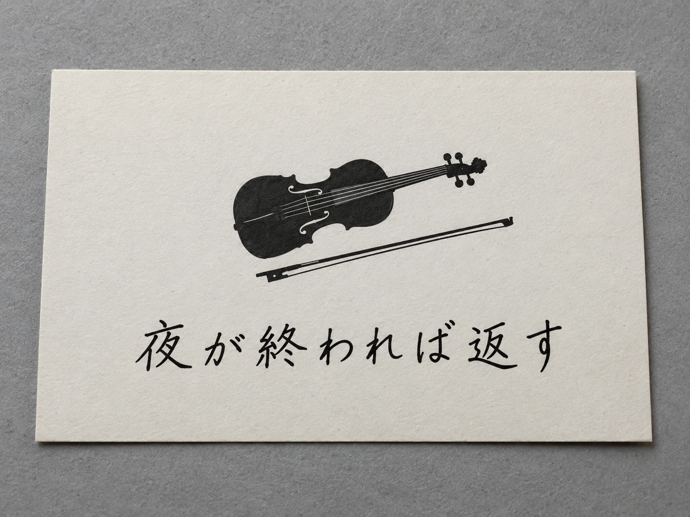

RELATED DOCUMENT
CASE-240819NN メッセージカード
現場に残されていた、楽器のシルエットと「夜が終われば返す」の文面があるカード。
楽器収蔵施設への侵入後、現場に残されていたメッセージカードを記録したもの。楽器のシルエットと「夜が終われば返す」の文面が確認できる。

RELATED DOCUMENT
現場に残されていた、楽器のシルエットと「夜が終われば返す」の文面があるカード。
楽器収蔵施設への侵入後、現場に残されていたメッセージカードを記録したもの。楽器のシルエットと「夜が終われば返す」の文面が確認できる。
